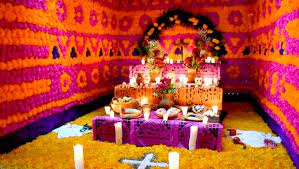
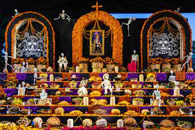

El altar de Día de Muertos está compuesto por elementos básicos cuyo valioso significado lo ha convertido en una de las partes más importantes de la celebración de muertos. Ésta se lleva a cabo gracias a que, según se cree, las ánimas regresan a disfrutar los platillos, a probar la fruta y a contemplar la flor de cempasúchil que se les ofrece. De esta forma, vivos y muertos se reencuentran en una dimensión que les permite convivir. Cabe mencionar que las ofrendas se colocan en una mesa con dos niveles que simbolizan el cielo y la tierra. Si es de tres, se les añade el purgatorio. Las más grandes son de siete niveles y representan los pasos para llegar al descanso eterno.

Elementos indispensables de una ofrenda o altar de Día de Muertos 1. Agua Reflejo de la pureza. Ayuda a mitigar la sed del alma que viene de un largo camino y también fortalece su regreso. 2. Veladoras y cirios Su flama es la luz, la fe y la esperanza que guía en este y el otro mundo. En algunas comunidades indígenas cada vela representa un difunto. Si los cirios tienen algún motivo morado significa duelo; si se colocan en forma de cruz implica los cuatro puntos cardinales que orientan el camino del ánima a su casa. 3. Copal e incienso Fragancia de reverencia que limpia y purifica el ambiente, además ahuyenta los malos espíritus. 4. Cempasúchil Flor que por su olor y color dirige las almas a nuestro hogar. 5. Alhelí y nube Sus colores se complementan con la flor amarilla. Por su pureza y ternura acompañan el alma de los niños. 6. Arco Se adorna con flor de cempasúchil y fruta; representa la entrada hacia el inframundo. 7. Cruz Elemento introducido durante la evangelización, se coloca en la parte superior del altar; a veces está formado con ceniza, otras con sal o pétalos de cempasúchil. 8. Pan No pueden faltar en los altares representan a la fraternidad. 9. Petate Sirve para el descanso de las ánimas. En algunos hogares se usa como mantel para poner los alimentos. 10. Fotografía del difunto Honra a la persona que fue en vida. Algunas comunidades ponen la imagen escondida para que sólo se vea en un espejo y así dan a entender que se puede ver pero no existe. 11. Comida guisada Para que los espíritus se alimenten con los aromas de los platillos que fueron sus preferidos. 12. Calaveritas de azúcar Aluden a la muerte, siempre presente. --------------------------------------------- El Colegio GGM, por parte de Secundaria, realizó un Altar De Muertos en el que los 3 grupos participaron.Conocenos